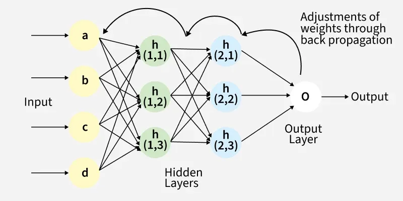

Large language models (LLMs) are designed to understand and generate human language.
When generating a response, LLMs assess the probability of all possible next words and pick the most likely next word most of the time.
However, less likely next words are picked at random in order to ensure unique responses every time the question is asked.
LLMs assess the probability of next words using large amounts of parameters (GPT-4 has over 1.7 trillion!) that dictate how such calculations should be made.
All parameters start at a random value, and the algorithm is trained by showing it all words in each passage of training data except the last. The current parameters are used to guess the last word, and the best way to improve the algorithm is calculated using backpropagation.

source
In the past few years, transformers have allowed for the creation of better LLMs. They allow words in a sentence to look at every other word in the sentence to gain context and understand the order the words are placed in. The importance of each word can be adjusted depending on the context.